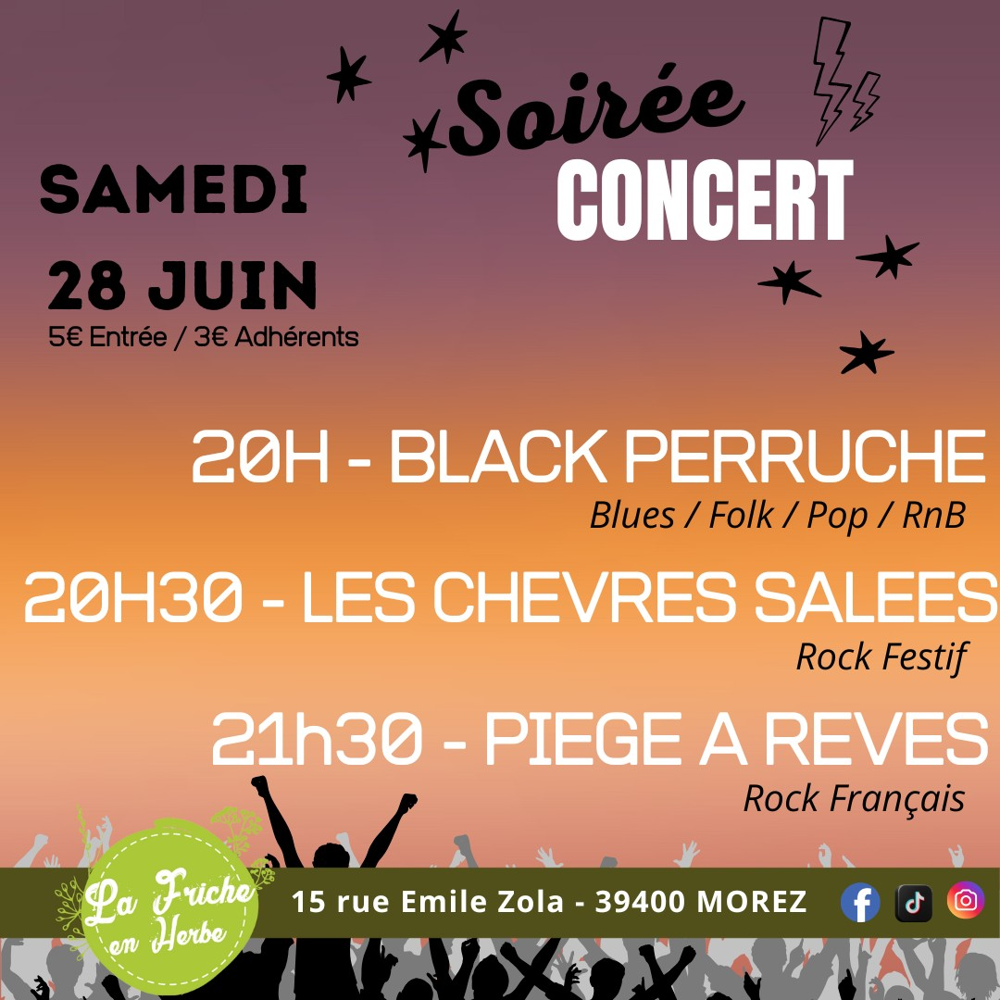
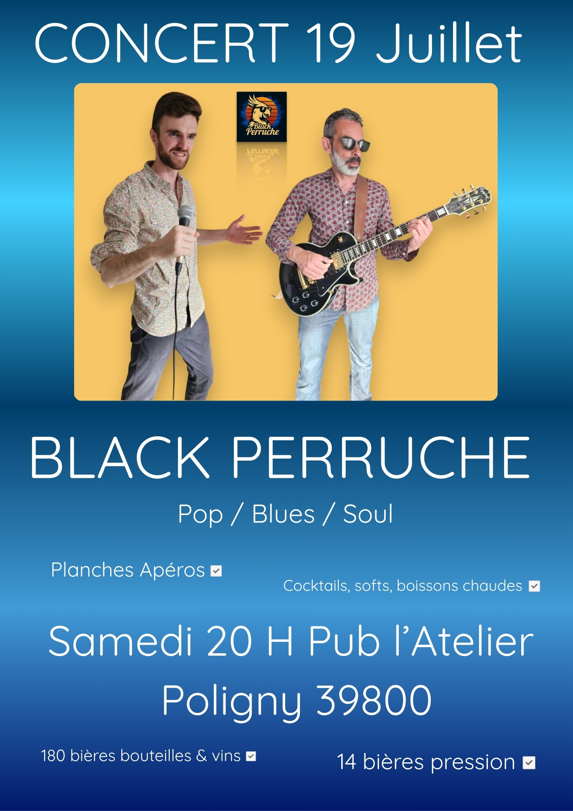
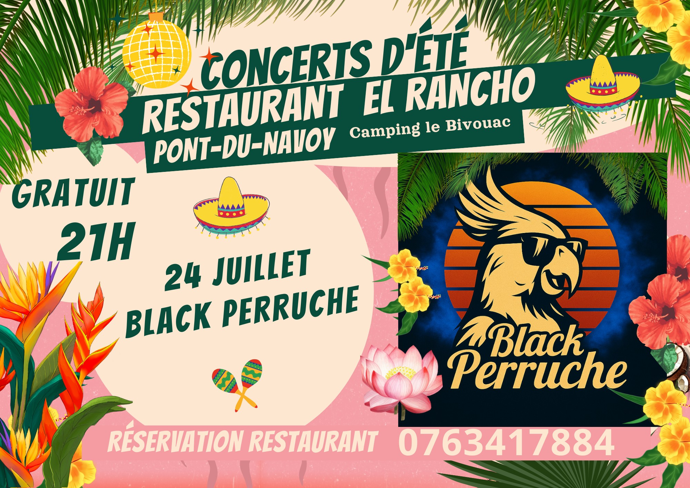

“Un style virevoltant qui vous met les plumes”
“Maître Perruche sur un arbre avec 2 mecs perchés,
chantait dans son bec un air à la tangente
de la musique noire américaine et de la pop culture.”


Viens nous écouter sur ton réseau préféré🎶


Nos Concerts en Images



Mail : perrucheblack@gmail.com
Téléphone : 06 14 85 50 61